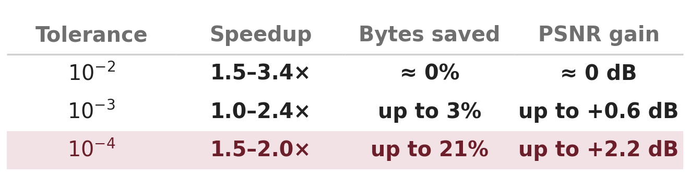
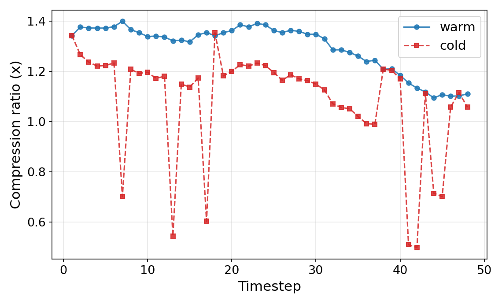
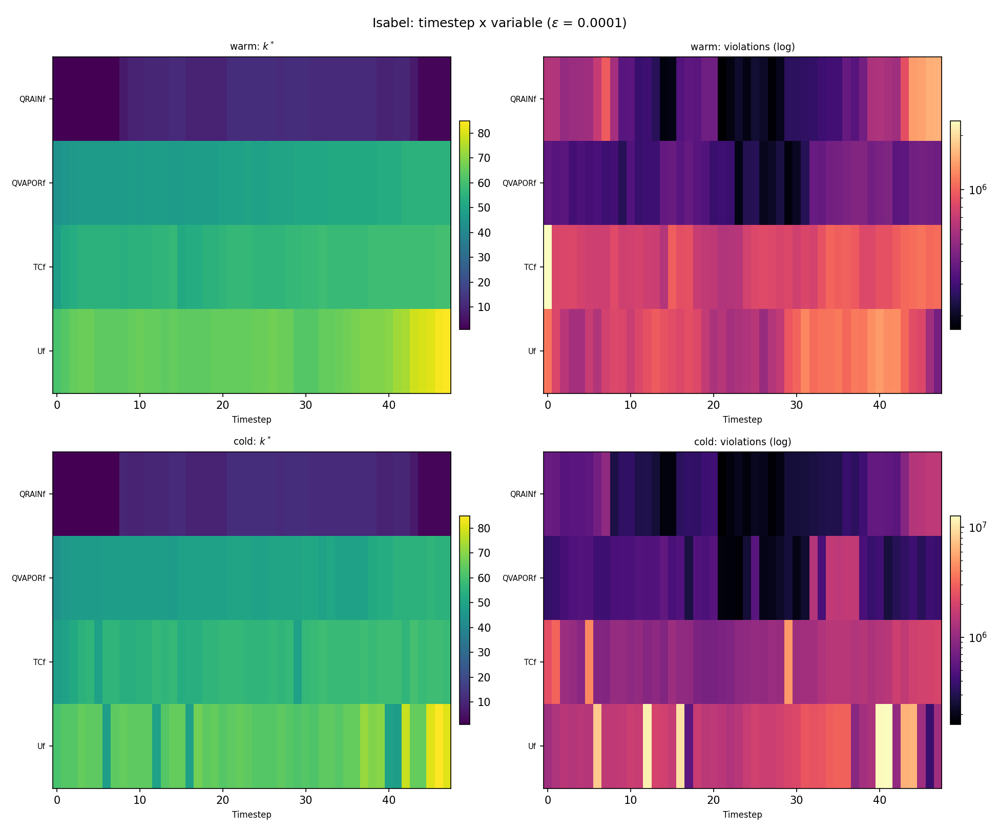
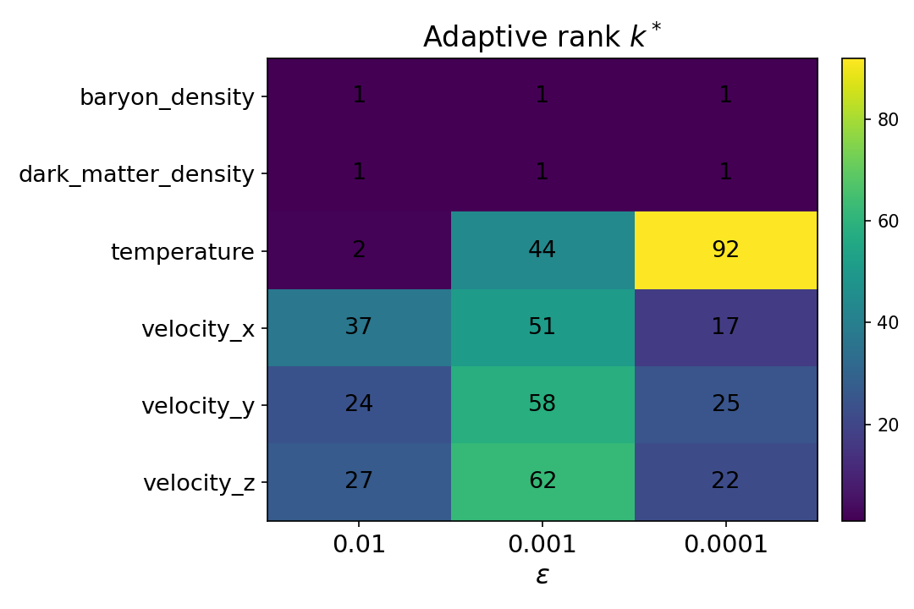
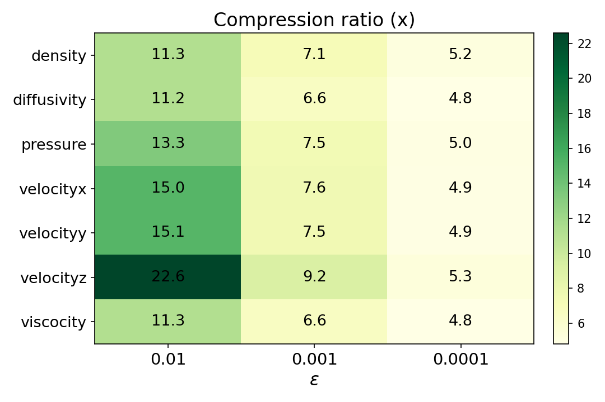

Developing warm-started randomized HOSVD algorithms optimized for GPUs to efficiently conduct lossy compression of streaming tensor data.
Available materials: GitHub Presentations (Slides)
This project develops warm-started randomized higher-order SVD algorithms optimized for GPUs to efficiently compress and decompress streaming tensor data, for example the kind produced in massive scientific simulations (e.g. weather simulations). The goal is to produce error-controlled Tucker decompositions of streaming high-dimensional tensors ("snapshots") efficiently and independently to prepare for a compression pipeline, leveraging prior solutions to accelerate SVD on new data arrivals using stochastic methods.
Adaptive error-bounded compression: warm vs cold (slides)
Adaptive L+S warm-started compressor with a pointwise maximum error guarantee and cost-optimal rank selection; benchmarked on Hurricane Isabel. Method extended to two static datasets.
Compression fidelity on Hurricane Isabel (slides)
Compression fidelity analysis measuring PSNR and reconstruction quality across all 13 physical variables.
Preliminary experiments (slides)
Began experimental validation on synthetic and real tensor streams. Initial benchmark comparisons with baseline methods and exploration of GPU kernel optimizations.
Ideation phase and presentation (slides)
Initial conceptualization of the warm-started rHOSVD algorithm for streaming tensor decomposition.
| Dataset | Hurricane IsabelWRF weather | NYXCosmology | MirandaTurbulent mixing |
|---|---|---|---|
| Grid | 100 × 500 × 500 × 48 | 512 × 512 × 512 | 384 × 384 × 256 |
| Variables | 13 | 6 | 7 |
| Experiment | warm + cold | cold | cold |
The current CPU milestone is an adaptive, error-bounded compressor that stores each snapshot as a low-rank layer plus a sparse correction layer (Â = L + S), with a hard guarantee that the maximum elementwise error never exceeds a user tolerance τ. The cost-optimal rank is selected by minimizing a cost model objective function discretely, and on streaming data the previous snapshot's singular subspace is reused as a warm start, and the trailing optimal rank is used to minimize the search window, cutting time at every tolerance and, at tight tolerances on dense fields, also storing fewer bytes at higher fidelity. The method is evaluated on three scientific datasets: Hurricane Isabel (temporal), NYX (cosmology), and Miranda (turbulent mixing).
Warm-start is faster at every tolerance; its storage and fidelity gains emerge only as the error tolerance tightens and the optimal rank climbs. Ranges span the four featured Isabel variables.



On non-temporal variables the compressor runs cold. NYX splits into three compressibility regimes; densities collapse to one rank, velocities are mid-rank, and temperature climbs steeply as the tolerance tightens. Miranda stays comfortably compressible across every field and tolerance.

